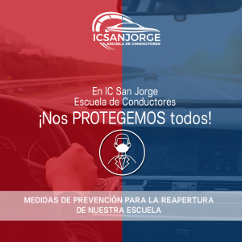

<div class="separador text-center text-white">

    <div class="card-group">
        <div class="card">
            <div class="card-body">
                <div class="logo">
                    
                </div>
                <p class="card-text">
                    Somos un Organismo Técnico de Capacitación acreditado bajo la norma Nch 2728 y con Acreditación de
                    ministerio de Transporte, operando como Escuela de conducción, que cuenta con el mejor personal
                    capacitado, que busca no solo enseñar a manejar, sino que los futuros conductores, puedan tomar
                    decisiones acertadas, tomando siempre todas las precauciones posibles ante cualquier eventualidad en
                    las vías.

                    Nuestra preocupación es hacia el alumno, desarrollando clases personalizadas y adecuándonos al
                    tiempo de él, para que sus logros sean óptimos y así con esto desarrollar a un conductor
                    profesional, responsable y apto para salir en un vehículo. Contamos con las mejores salas de
                    capacitación, con servicios de primera línea, equipos psicotécnicos y autos nuevos. Contamos con
                    sistema de vanguardia y en época de pandemia con curso E-learning en caso de que el alumno no cuente
                    con el tiempo necesario para realizar clases presenciales, bajo métodos de evaluación que se adapten
                    a los tiempos de cada uno, pues personalizamos cada curso como un traje a la medida.
                </p>
            </div>
        </div>

        <div class="card mb-3">
            <div class="card-body">
                <h5 class="card-title">CONDUCTORES SEGUROS Y RESPONSABLES</h5>
                <p class="card-text">Nuestra visión de enseñanza es Formar conductores SEGUROS y RESPONSABLES, según la
                    exigencia de las leyes de transito vigente. Nos destacamos por otorgar la mejor enseñanza y atención
                    a nuestros alumnos; trabajamos con destacados avances tecnológicos y de calidad.
                    ¡TE ENSEÑAMOS A CONDUCIR DE FORMA ÍNTEGRA, RESPONSABLE Y PROFESIONAL!.</p>
                <div class="manual">
                    
                </div>
            </div>
        </div>
        
    </div>
</div>